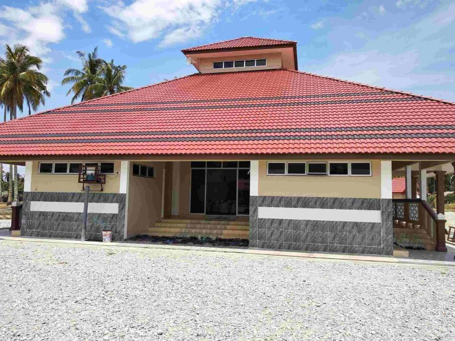
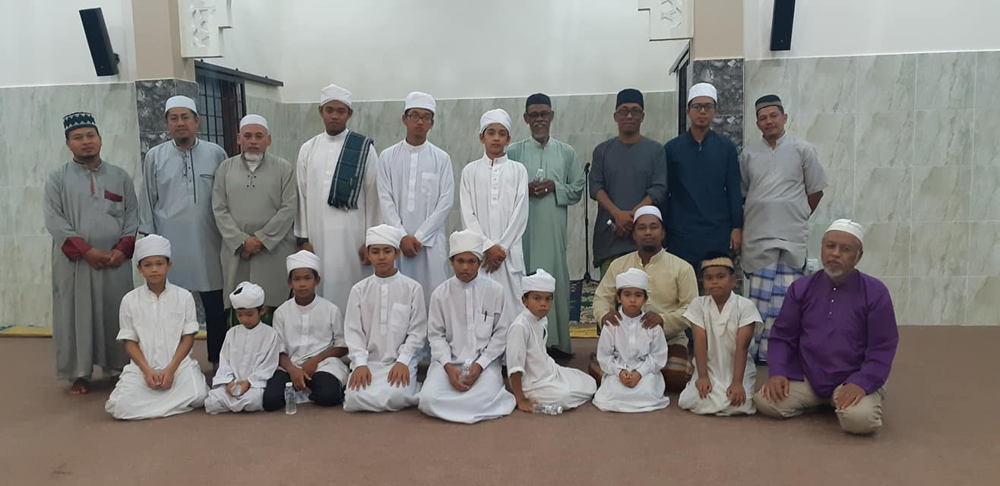
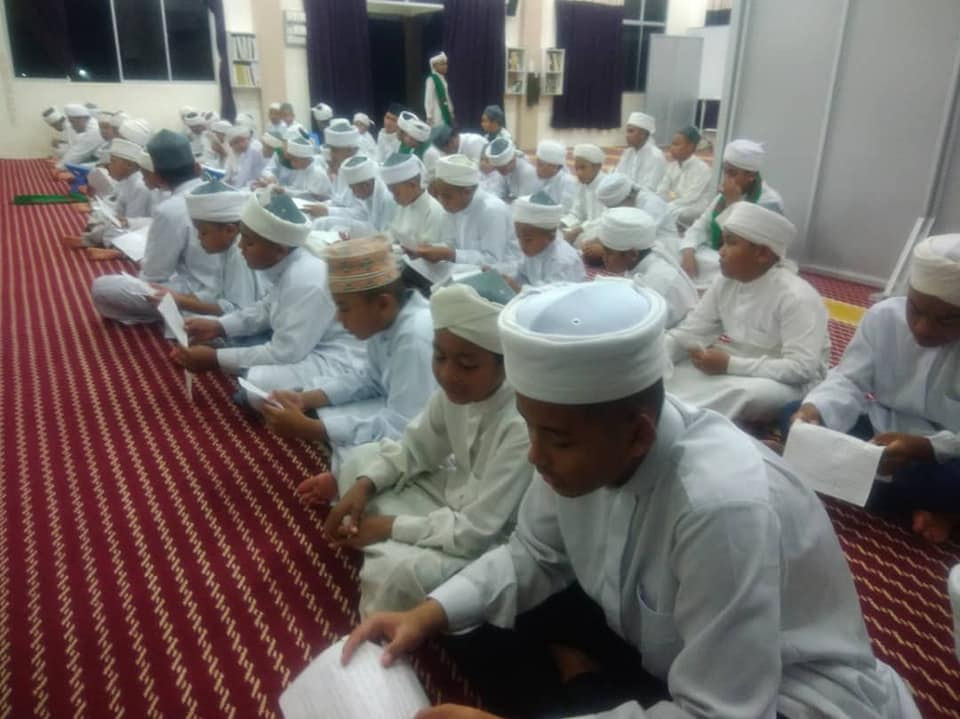
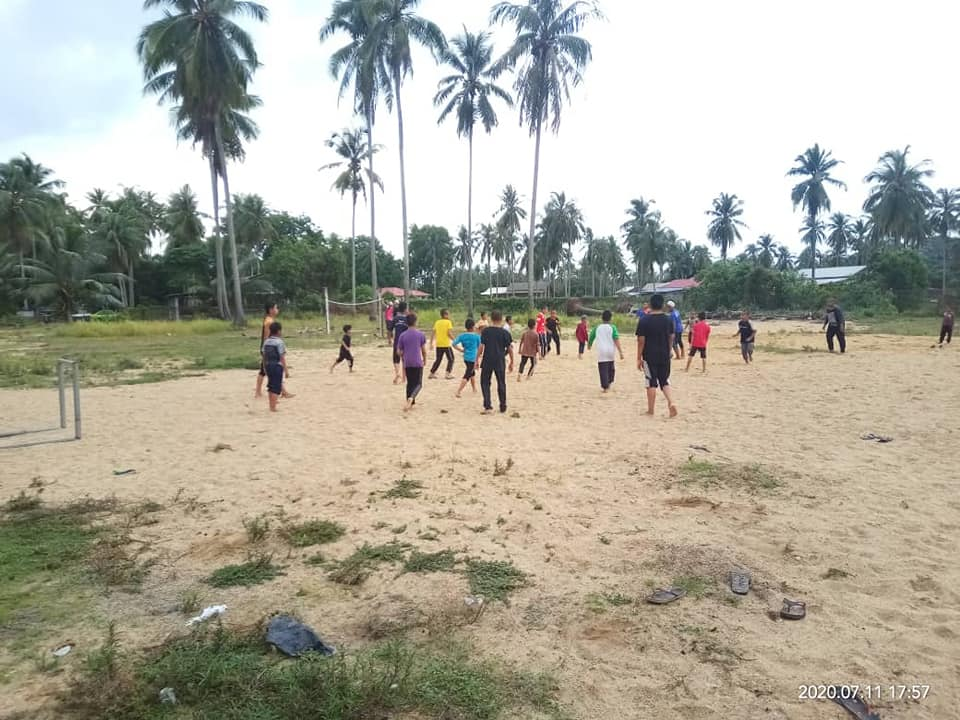

Rumah Kebajikan Anak Yatim dan Dhuafa' Darul Mizan is a welfare home located in Kampung Senak, Bachok, Kelantan Darul Naim. It was established on April 15, 2012, with the aim of providing care, support, and assistance to orphans and the underprivileged. The home operates with the objective of creating a loving and safe environment for these individuals, ensuring their well-being and development.
The welfare home is named in honor of the mother of the advisor, Ustaz Haji Nik Mohamed Hazli Bin Haji Nik Husain. Ustaz Haji Nik Mohamed Hazli and his siblings contributed a total of RM 2.3 million to establish the building on land that was donated by their mother.

Ustaz Dato’ Haji Mohd Nazry Bin Mohamad Nor and other staff members strive to address the needs of orphaned children and individuals from disadvantaged backgrounds by providing essential facilities such as shelter, food, education, healthcare, and emotional support. The organization believes in the importance of holistic development and aims to empower its residents by offering educational and vocational training opportunities.
It is worth mentioning that the residents of this welfare home are engaged in various interesting activities throughout their days. They attend school and participate in activities such as morning lectures, five daily congregational prayers, evening lectures, Quran recitation, communal work, and special classes on moral values taught by invited teachers. Additionally, the residents come not only from Kelantan but also from various states across Malaysia, including Selangor, Terengganu, and Pahang.


Furthermore, Rumah Kebajikan Anak Yatim dan Dhuafa' Darul Mizan highly values contributions from the public. Some of the essential items that are greatly needed include bathing soap, laundry detergent, washing soap, toothpaste, shampoo, toothbrushes, and more for the daily use of the residents.
Through dedicated staff and volunteers, Rumah Kebajikan Anak Yatim dan Dhuafa' Darul Mizan is committed to creating a caring and inclusive environment that nurtures the potential of each individual. By providing a variety of services and opportunities, they aspire to help orphans and the underprivileged in Kelantan break free from the cycle of poverty and lead fulfilling lives.